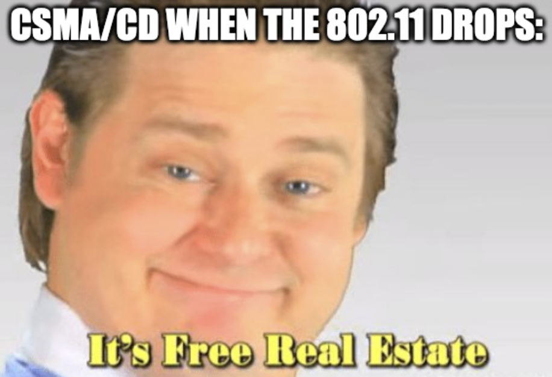

Unidad 3 - Medios Compartidos
Antes vimos que se podía compartir un canal de transmisión mediante técnicas como la multiplexación por tiempo o por frecuencia. Esas técnicas lo que permitían era lograr que varios nodos utilicen el medio "de forma independiente", o sea que la transmisión de un dispositivo no interfiera con la de otro.
Ahora vamos a ver otro approach, que es sugerido y generalmente utilizado para ethernet y en el protocolo de wifi (802.11). La idea es permitir que todos los dispositivos usen el mismo canal para transferir, y si más adelante hay un problema (ej 2 quieren transmitir al mismo tiempo) ahí se ve cómo se resuelve.
Y por supuesto se va a buscar minimizar la cantidad de intentos que tiene que hacer un dispositivo para poder hacer el envio de paquetes deseado y asegurar fairness.
La tecnología que usa Ethernet y otras redes inalámbricas (802.11), lleva el nombre de Carrier Sense, Multiple Access with Collision Detect (CSMA/CD). Es un protocolo que permite que un conjunto de nodos manden mensajes a través de un enlace compartido.
- El Carrier Sense viene por el hecho de que todos los nodos pueden distinguir en todo momento si un canal está libre o en uso.
- Por otro lado, el Collision Detect viene por el hecho de que el emisor a medida que transmite sensa el canal y puede darse cuenta de si hubo una colisión en la transmisión con otro nodo.
La realidad es que hoy en día la mayoría de las conexiones cableadas son punto a punto (o sea el enlace es propio de cada par de nodos). Y la parte de multiplexación la resuelven los switches. Es por eso que hoy en día no está tan presente el protocolo... redes cableadas.
Por otro lado las redes inalámbricas hoy en día son la norma en muchos entornos con lo cual el uso de CSMA/CD retoma relevancia.

Llamamos Dominio de Colisión al conjunto de los nodos que pueden generar una colisión en el medio al intentar transmitir (no están incluidas los nodos separados por medio de un switch).
CSMA/CD
Vamos a ver el caso de acceso múltiple en cable ethernet ya que si bien es algo anecdótico hoy en día, los mismos principios se pueden aplicar a nuevas tecnologías.
Para empezar hablemos un toque de Ethernet:
- Admite tramos de hasta 500m (no más para evitar atenuación de la señal).
- Admite máximo hasta 4 repetidores
- Requiere como mínimo 2,5 metros entre host y host.
- Las transmisiones son broadcasteadas a lo largo del cable (y a través de repetidores)
Además, un frame de Ethernet contiene los siguientes campos (segun el estándar 802.3):

- Primero tiene un preámbulo de 64 bits, es una secuencia de 0's y 1's alternada que le permite al receptor sincronizarse con la señal.
- Después le siguen las direcciones de destino y fuente respectivamente que son
direcciones de 48 bits.
- las direcciones son "únicas" y vienen grabadas en la rom de los adaptadores de red
- El adaptador de red sensa el canal y si ve un frame cuyo campo de destinatario es su dirección entonces le deriva el frame al host. Hace lo mismo si el frame tiene la dirección de broadcast.
- Después sigue el campo del tipo, que indica a cuál protocolo de más alto nivel se le enviaría el frame.
- Luego el body del frame tiene la data en si a enviar. Un detalle no menor es que un frame puede contener hasta 1500 bytes de datos, y tiene que tener por lo menos 46 bytes de datos (esto último es necesario para tener tiempo suficiente de detectar una colisión) por lo que en caso de no tener suficientes datos se le agrega algo de padding.
- Por último un campo CRC para chequeo de errores
Un pequeño detalle es que para el host el frame de ethernet en realidad no tiene ni el preámbulo ni el CRC, el adaptador de red es el que se encarga de agregar esos campos extra.
El algoritmo que sigue un transmisor que implementa CSMA/CD se puede resumir con el siguiente diagrama de estados:

- El transmisor siempre que le llega un frame nuevo va a intentar transmitir
- Si el canal está libre transmite de una
- Si el canal está ocupado, espera a que se libere
- Ni bien se libera, el transmisor va a intentar enviar
- Si está transmitiendo, pueden pasar 1 de 2 cosas:
- Es el único dispositivo usando el canal y el frame se envía correctamente y sin problemas
- Mientras está enviando, otro dispositivo también decide enviar un frame,
generando lo que se conoce como una colisión. Para eso el transmisor
sensa el medio y si detecta un voltage anormal entonces eso es a causa de
la colisión
- Cuando detecta una colisión frena la transmisión actual y envía una
secuencia de jamming de 32 bits (por lo general es una tira de
1's y listo). El objetivo de dicha secuencia es hacer que el receptor
deje de escuchar la señal.
- Eventualmente el otro emisor también va a detectar la colisión y va a enviar su propia secuencia de jamming.
- Una vez que se detecta la colisión y se envía la secuencia de jamming, se aplica una política de exponential backoff. Eso es esperar un cierto tiempo antes de enviar. Si se vuelve a dar una colisión, esperar el doble y así hasta que se haga efectiva o se supere un límite predefinido (en general es de 16 intentos), en cuyo caso el adaptador avisa al host que la transmisión falló.
- Cuando detecta una colisión frena la transmisión actual y envía una
secuencia de jamming de 32 bits (por lo general es una tira de
1's y listo). El objetivo de dicha secuencia es hacer que el receptor
deje de escuchar la señal.
Para ser un poco más específico, la idea en el exponential backoff es dividir el tiempo en slots entre 0 y \(2^k - 1\), siendo \(k\) la cantidad de intentos. Se elige uno de los slots al azar y eso representa la cantidad de slots que se espera. Un slot representa 51,2 \(\mu\)s que es el tiempo necesario para transferir el frame más chico.
Ahora que conocemos el algoritmo, tiene más sentido el motivo por el cuál necesitamos tener al menos 46 bytes de datos a enviar. Esto es porque incluso en el caso en el que estén los dos hosts lo más alejados posible (2500 metros usando 4 repetidores), el Round Trip Delay es de al rededor de 51,2 \(\mu\)s que en una conexión de 10Mbps equivale a 512 bits. De esta forma, si nuestra frame tiene al menos 512 bits si o si uno de los dos emisores va a detectar la colisión antes de terminar de enviar su frame.
Ethernet se dice que es un protocolo 1-persistente porque siempre que sensa el medio y está libre va a intentar enviar. Este es un caso particular de lo que se conoce como transmisores p-persistentes, en donde se transmite con probabilidad p una vez que se libera el medio.
Una última observación es que en este algoritmo se contempla que sólo se puede leer o escribir en el canal, pero no los 2 al mismo tiempo. Eso se conoce como un algoritmo de half-duplex. No confundir esto con la clasificación de canales. El canal puede ser full duplex (se puede escuchar y enviar al mismo tiempo) mientras que el algoritmo es half duplex.
Recomiendo también pegarle una chusmeada a esta explicación de CSMA/CD.
Midiendo performance de CSMA
Sean \(S\) la carga ofrecida (nro de intentos de transmisión por unidad de tiempo, o sea cuánto tengo que usar del medio para transmitir) y \(G\) el goodput (proporción de transmisiones exitosas por unidad de tiempo), entonces:
$$ S = G * (1 - P_{colision}) $$
Podemos graficar la relación entre la carga, el goodput y la variante de CSMA:

- Aloha es otro protocolo que consiste en lo que vimos antes. Enviar un mensaje
y si no me llega un ACK de dicho mensaje re-enviar. (esto no descarta
totalmente ese mecanismo para asegurar confiabilidad y control de errores
porque como verems más adelante si se usa en protocolos de más alto nivel)
- Slotted aloha es lo mismo pero la emisión se da en "slots discretos"
- CSMA es fácil de implementar pero tiene mala perf en la práctica a medida que aumenta la carga. (en estudios se validó que a partir de 30% de carga aprox ya se degrada mucho)
- En el gráfico se hace mención de non-persistent CSMA. La diferencia entre este y 1p-CSMA/CD es que 1p-CSMA/CD transmite ni bien encuentra el canal libre. En cambio el non persistent sensa el canal y si está en uso espera una cantidad fija de tiempo (no transmite ni bien se libera). Si bien reduce las changes de colisión también cae el throughput. Dicho eso reacciona mejor a la relación entre carga y goodput.
- Se hace obvia la relación entre el delay hasta poder transmitir (si espero más entre cada transmisión) y el goodput, y cómo esto afecta al throughput final.
TODO: Resumir diapos 20-24 inclusive (no encuentro referencia en la docu)